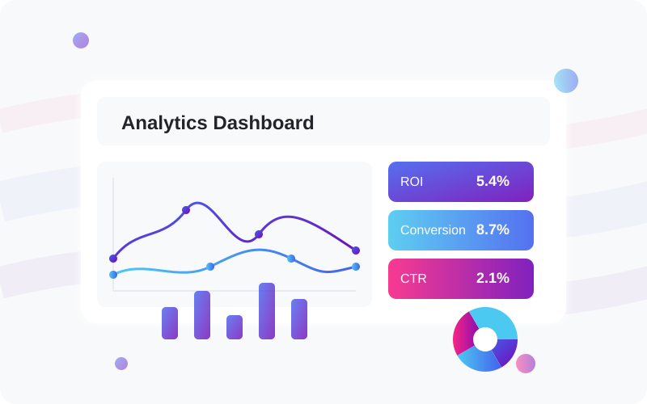

Monthly performance metrics showing the relationship between advertising spend and key performance indicators over time.
Unlock the power of data-driven advertising decisions with our comprehensive analytics platform

Comprehensive view of key advertising metrics across all channels
Detailed analysis of return on investment and conversion metrics across campaigns
This boxplot visualization shows the distribution of ROI across different advertising channels, highlighting median values, quartiles, and outliers. Instagram and Facebook show the highest median ROI values, while Pinterest demonstrates greater variability.
Conversion rates vary significantly across channels, with email marketing and Instagram showing the highest average conversion rates. This analysis helps identify which platforms are most effective at converting viewers into customers.
This scatter plot reveals the relationship between conversion rates and ROI across different channels, with point size representing click volume. The positive correlation indicates that channels with higher conversion rates typically generate better ROI, though some outliers exist.
Different campaign types show varying ROI performance. Product launches and seasonal promotions consistently outperform brand awareness campaigns, suggesting a focus on direct response marketing may be more profitable.
This analysis examines the relationship between customer acquisition costs and ROI. Interestingly, higher acquisition costs don't always lead to lower ROI, suggesting that premium targeting can justify higher spending in certain segments.
Analyzing user interaction and engagement across advertising channels
This visualization compares engagement scores across different advertising channels. Instagram and YouTube demonstrate the highest engagement levels, suggesting these platforms are most effective for building meaningful interactions with audiences.
This scatter plot shows the relationship between impressions and clicks across different channels, with point size representing engagement score. The analysis reveals which channels are most efficient at converting impressions into clicks.
Click-through rates vary significantly across channels, with email marketing and search ads showing the highest CTR. This metric is crucial for understanding which platforms most effectively capture user attention and drive action.
This time-series analysis tracks engagement metrics over the campaign period, revealing seasonal patterns and the impact of specific marketing initiatives on user interaction levels.
This analysis explores the relationship between engagement scores and conversion rates, helping identify whether highly engaging content actually drives business results or merely creates non-converting interactions.
Understanding audience segments and their response to advertising campaigns
This chart shows the distribution of advertising campaigns by target gender. Understanding this breakdown helps ensure balanced targeting across different demographic segments.
Age range distribution across campaigns reveals which age segments are most frequently targeted. The 25-34 age group receives the most focus, followed by 35-44, reflecting the primary consumer demographics for the advertised products.
This analysis compares ROI across different demographic segments, revealing which audience groups deliver the highest returns. Women in the 35-44 age range show particularly strong ROI, suggesting this segment should be prioritized in future campaigns.
Conversion rates vary significantly across demographic segments. This visualization helps identify which audience groups are most likely to convert, enabling more targeted and efficient campaign planning.
This hierarchical visualization breaks down campaign performance by gender, age range, and channel, providing a comprehensive view of which demographic-channel combinations deliver the strongest results.
Comparative analysis of different advertising channels and their effectiveness
| Channel | ROI | Conv. Rate | CPC | Engagement | CTR |
|---|---|---|---|---|---|
| 5.79% | 0.15% | $1.00 | 7.0 | 0.17% | |
| 7.21% | 0.01% | $1.00 | 5.0 | 0.17% | |
| Google Ads | 4.25% | 0.12% | $1.42 | 6.0 | 0.22% |
| YouTube | 3.89% | 0.07% | $1.35 | 8.0 | 0.15% |
| 0.91% | 0.03% | $1.71 | 1.0 | 0.09% |
This dual-axis chart compares ROI (bars) and conversion rates (line) across different advertising channels. Facebook shows the highest ROI despite a low conversion rate, while Instagram balances strong performance in both metrics.
This visualization compares click-through rates and engagement scores across channels. YouTube shows high engagement despite moderate CTR, while Google Ads demonstrates strong CTR with moderate engagement, highlighting different channel strengths.
This analysis examines the relationship between traditional advertising channels (TV, radio, newspaper) and sales performance, showing TV's dominant impact on driving sales compared to other traditional media.
This visualization compares the performance of digital advertising channels, revealing that social media and search advertising deliver the strongest results in terms of both ROI and conversion metrics.
AI-powered prediction system to forecast advertising performance
Our prediction model uses Random Forest regression to forecast advertising success based on spending across different channels. The model demonstrates strong predictive power with an R² score of 0.89, indicating it can explain 89% of the variance in sales outcomes.
Feature importance analysis reveals that TV advertising and social media have the strongest impact on sales predictions, followed by Google Ads and influencer marketing.
Estimate product sales based on your advertising budget allocation
This chart shows the relative impact of each advertising channel on sales predictions. Higher values indicate stronger influence on the prediction model's output.
This scatter plot compares actual sales values with model predictions, with the diagonal line representing perfect predictions. Points clustered near this line indicate high model accuracy, while deviations represent prediction errors.
Data-driven recommendations to maximize advertising effectiveness
This chart shows the efficiency of each advertising channel in terms of products sold per dollar spent. Social media and Google Ads demonstrate the highest efficiency, suggesting these channels should receive priority in budget allocation.
Based on channel efficiency analysis, this chart recommends optimal budget allocation across different advertising channels to maximize overall campaign performance and ROI.
Reallocate budget to prioritize high-efficiency channels like social media and search advertising. Reduce spending on low-performing channels like Pinterest.
Focus campaigns on high-converting demographic segments, particularly women aged 35-44 and men aged 25-34, who show the strongest response to advertising efforts.
Prioritize product launch and seasonal promotion campaigns, which consistently outperform brand awareness initiatives in terms of ROI and conversion metrics.
Implement A/B testing and regular performance reviews to continuously refine targeting parameters and creative elements based on real-time data.